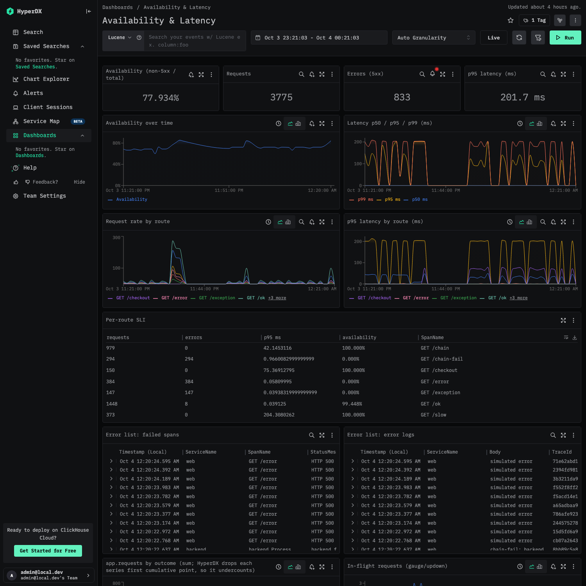
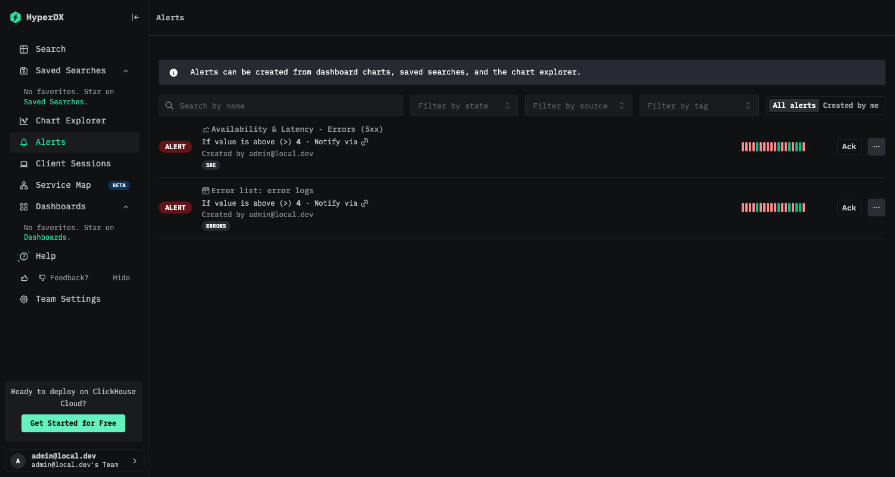

Story · module 3 of 3
The evidence it works
What was tested, what the results were, and what they do not prove, with every number taken from the captured evidence.
After this module you can
- read the headline results and say what each one proves,
- explain why negative tests matter for a test suite, and
- name what the results do not cover.
The headline results
Every result below was produced by scripts in the repository, against the platform running on one laptop, and each number on this page is read from a file captured from those runs. The load generator sends a known mix of requests and writes down what it sent. The checks compare what arrived with what was sent, and never with the telemetry being checked.
The run behind these numbers sent 225 requests and expected 815 spans, 305 log lines, and 35 failures, which makes the expected availability 84.4%.
Verification: what arrived equals what was sent
Filter the table by family. The pipeline checks count logs, spans and metric points exactly. The tracing checks confirm every trace has the exact span chain across both services. The HyperDX checks ask HyperDX's own API for the same numbers a user would see.
| Check | What it asserts | Result |
|---|---|---|
G1 | ground truth: requests / spans / logs / 5xx / availability match the contract | pass |
A1 | logs: count per (service, severity) equals ground truth | pass |
A2 | spans: count per (service, kind, status, name) equals contract | pass |
A3a | metrics: web app.requests per (route, outcome) equals request mix | pass |
A3b | metrics: backend app.requests per (rpc, outcome) equals chain / chain-fail / checkout counts | pass |
A3c | metrics: http.server.request.duration histogram count per route equals request mix | pass |
A3d | metrics: /slow histogram sum reflects the injected 200ms delay | pass |
A3e | metrics: in-flight requests gauge settles at 0 on every route | pass |
A4t | otel_traces: no duplicate rows (raw == FINAL == unique provenance keys) | pass |
A4l | otel_logs: no duplicate rows (raw == FINAL == unique provenance keys) | pass |
A4m | otel_metrics_sum: no duplicate metric points (raw == FINAL == unique provenance keys) | pass |
A4m | otel_metrics_histogram: no duplicate metric points (raw == FINAL == unique provenance keys) | pass |
E16 | End-to-end latency, every row: 99th percentile within 15 s (measured values are in the table below) | pass |
B5 | /chain: all 50 traces have the exact web->client->backend span chain (no errors) | pass |
B6a | /chain: log correlation, each trace id has exactly the web+backend logs | pass |
B7 | /chain-fail: all 10 traces have the exact web->client->backend span chain with Error propagated on every hop | pass |
B6b | /chain-fail: log correlation, each trace id has exactly the web+backend logs | pass |
B9 | /checkout: all 20 traces have exactly the 22-span call tree, each span under its expected parent, one root, no errors | pass |
B8 | every x-trace-id returned to the client exists in ClickHouse | pass |
D12 | HyperDX search: Traces and Logs sources return exactly this run's spans and logs | pass |
D12b | HyperDX Metrics source: the app.requests counter series has data points for this run | pass |
D13a | HyperDX chart: request count (web server spans) equals requests sent | pass |
D13b | HyperDX chart: availability (non-5xx / total) equals ground truth | pass |
D13c | HyperDX chart: /slow p50 latency is consistent with the injected 200ms | pass |
D13d | HyperDX chart grouped by route: request counts per route equal the request mix | pass |
D13e | HyperDX chart grouped by route: error counts per route equal the 5xx mix | pass |
D16 | dashboards exist: 'Availability & Latency' (13 tiles incl. availability, latency, error lists) and 'Runlog' (4 tiles, 2 filters) | pass |
D14a | error list (failed web spans) = exactly the /error, /exception, /chain-fail requests | pass |
D14b | error list (ERROR logs) equals expected error logs | pass |
D14c | saved searches 'Error list: failed spans' / 'error logs' return every failed span and ERROR log of the run | pass |
D15 | runlog saved searches for this run return all of its logs and spans | pass |
D15b | a trace id resolves to its spans and correlated logs in HyperDX | pass |
Source: stack/verify/verify.py, run course-evidence-002020, captured 2026-10-03T14:20:33Z.
Negative tests: the checks can fail
A set of checks that has only ever passed proves little. The self-test corrupts the stored data in ClickHouse after a clean run, and requires the right checks to fail each time.
| Corruption | Must fail | Failed |
|---|---|---|
| delete one /ok span | A2, D12, D13a | A2, B8, D12, D13a, D13b, D13d, D15 |
| flip one /ok span to Error | A2, D13b, D14a | A2, D13b, D13e, D14a, D14c |
| duplicate one span row (new provenance-independent copy) | A4t | A2, A4t, D12, D13a, D13b, D13d, D15 |
| detach a backend span from its parent | B5 | B5 |
| move one /checkout function span under the wrong parent | B9 | B9 |
| delete one log record | A1, D12 | A1, B6a, D12, D15 |
| inflate web app.requests{/ok} counter values | A3a | A3a |
| corrupt the /slow latency histogram count | A3c | A3c |
Source: stack/verify/selftest.py, captured 2026-10-03T14:20:33Z. All 8 corruptions were caught, and the clean baseline run had no failures.
Failure tests
Each scenario sends load, injects a failure part-way through, waits for the system to settle, and then runs the same count and duplicate checks.
| Failure injected | Checks passed |
|---|---|
| All ingestors killed (SIGKILL) during load | 17 of 17 |
| All ingestors restarted during load | 17 of 17 |
| ClickHouse stopped for 20 s during load | 17 of 17 |
| Object store stopped for 8 s during load | 17 of 17 |
| Collector restarted while idle, then a full verification | 18 of 18 |
| Garbage entries written into all three queues during load | 17 of 17 |
| Object store stopped for 30 s during load | 17 of 17 |
Source: stack/verify/chaos.py, captured 2026-10-03T14:20:33Z.
Latency from event to queryable
For every row, latency is the time ClickHouse recorded the insert minus the time the event happened, so it covers the whole path. The collector flushes every 100 milliseconds in this stack, which is tuned for fast results. Module 11 shows what such a setting would cost on AWS.
| Signal | Rows | Median | 99th percentile | Slowest |
|---|---|---|---|---|
| spans | 815 | 1.20 s | 2.83 s | 2.86 s |
| logs | 305 | 0.62 s | 1.36 s | 1.37 s |
What a user sees

/error, /exception, /chain-fail) fail by design. The one-hour window also contains many test runs, including the self-test runs that delete or alter rows on purpose, so a few errors on the chart are deliberate tampering and not platform failures.
What these results do not show
Check your understanding
All correct. You have finished the Story track. Continue to the track that matches your work: module 4 for developers, or module 7 for platform engineers.